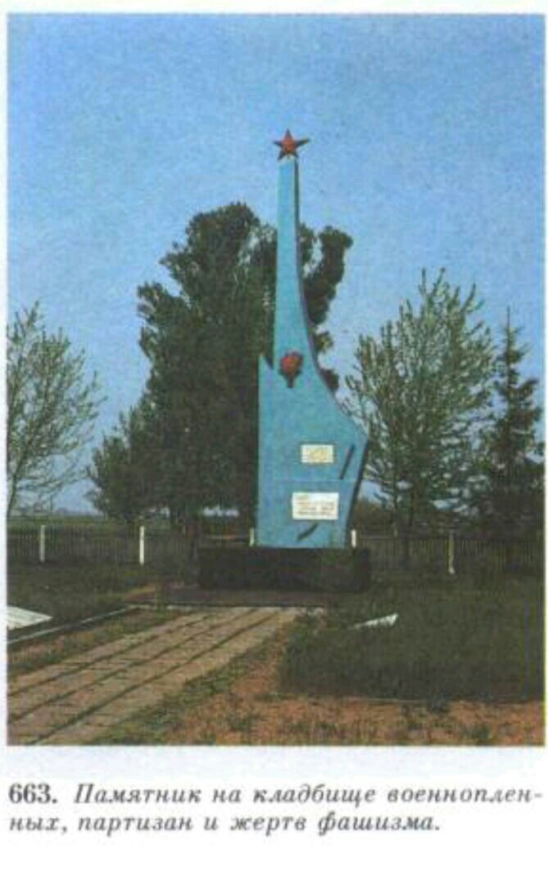

Обелиск
Кладбище военнопленных партизан и жертв фашизма на ул. Пушкина.
Похоронено более 1000 советских военнопленных, партизан, мирных жителей, уничтоженных немецко-фашистскими оккупантами в годы Великой Отечественной войны.
8 братских могил расположены по обе стороны центральной дорожки, которую замыкает установленный в 1968 г. обелиск.
